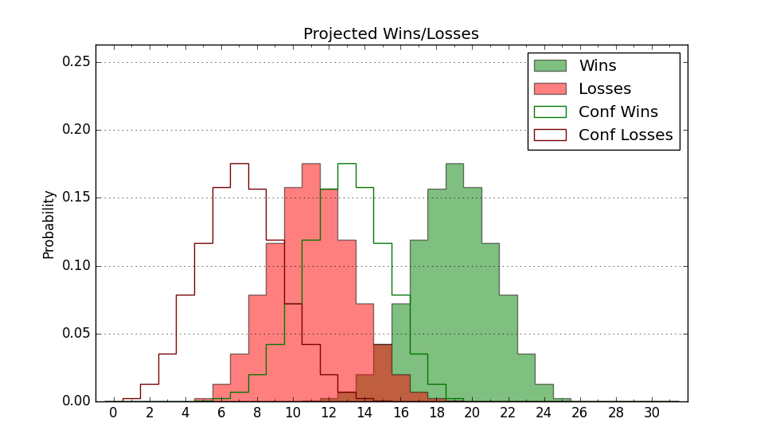

| Home | Game Probabilities | Conferences | Preseason Predictions | Odds Charts | NCAA Tournament |
| City: | Terre Haute, Indiana | |
| Conference: | Missouri Valley (1st)
| |
| Record: | 2-0 (Conf) 8-4 (Overall) | |
| Ratings: | Comp.: 2.8 (134th) Net: 3.3 (136th) Off: 104.4 (125th) Def: 101.1 (170th) SoR: 2.5 (144th) |
| Remaining | ||||||
|---|---|---|---|---|---|---|
| Date | Opponent | Win Prob | Pred. | |||
| 12/29 | Evansville (312) | 89.9% | W 80-64 | |||
| 1/1 | @ Valparaiso (317) | 72.9% | W 78-70 | |||
| 1/4 | @ Illinois St. (229) | 53.1% | W 73-72 | |||
| 1/7 | Illinois Chicago (277) | 85.6% | W 84-70 | |||
| 1/11 | Southern Illinois (115) | 60.0% | W 70-67 | |||
| 1/15 | @ Missouri St. (105) | 27.9% | L 66-73 | |||
| 1/18 | Bradley (65) | 40.2% | L 68-71 | |||
| 1/21 | @ Murray St. (209) | 49.3% | L 74-75 | |||
| 1/24 | @ Drake (91) | 24.0% | L 69-78 | |||
| 1/28 | Northern Iowa (189) | 74.7% | W 78-70 | |||
| 2/1 | @ Evansville (312) | 72.4% | W 76-69 | |||
| 2/4 | Murray St. (209) | 76.8% | W 79-70 | |||
| 2/8 | Valparaiso (317) | 90.2% | W 82-66 | |||
| 2/11 | @ Northern Iowa (189) | 46.4% | L 73-74 | |||
| 2/15 | @ Illinois Chicago (277) | 63.6% | W 79-75 | |||
| 2/18 | Illinois St. (229) | 79.4% | W 78-68 | |||
| 2/22 | @ Belmont (135) | 35.2% | L 77-81 | |||
| 2/26 | Missouri St. (105) | 56.9% | W 71-69 | |||
| Previous | Game Score | |||||
| Date | Opponent | Win Prob | Result | Off | Def | Net |
| 11/7 | Green Bay (357) | 96.2% | W 80-53 | -8.5 | 11.2 | 2.7 |
| 11/12 | Ball St. (141) | 66.1% | W 83-71 | 5.0 | 8.1 | 13.0 |
| 11/17 | North Dakota St. (269) | 85.0% | W 101-75 | 13.0 | 1.6 | 14.6 |
| 11/21 | (N) East Carolina (192) | 61.8% | W 79-75 | -2.0 | 1.4 | -0.6 |
| 11/22 | (N) UMKC (287) | 78.8% | L 61-63 | -13.9 | -6.3 | -20.2 |
| 11/23 | (N) Drexel (181) | 60.6% | W 85-81 | 24.5 | -31.3 | -6.7 |
| 11/30 | Drake (91) | 51.8% | W 75-73 | -1.0 | 4.0 | 3.0 |
| 12/3 | @Miami OH (336) | 77.9% | W 88-61 | -1.7 | 25.1 | 23.4 |
| 12/7 | @Southern Illinois (115) | 30.6% | W 74-71 | 13.2 | 3.8 | 17.1 |
| 12/11 | @Southern Indiana (246) | 58.1% | L 85-88 | -4.9 | -2.9 | -7.8 |
| 12/17 | @Duquesne (140) | 35.9% | L 86-92 | 9.1 | -13.2 | -4.1 |
| 12/22 | Northern Illinois (281) | 86.5% | L 57-67 | -30.9 | -4.4 | -35.3 |
| Stats & Trends | |||||
|---|---|---|---|---|---|
| Current | Day | Week | Month | Season | |
| Composite | 2.8 | -2.6 | -2.6 | -1.7 | +2.0 |
| Comp Rank | 134 | -22 | -23 | -16 | +16 |
| Net Efficiency | 3.3 | -3.5 | -3.8 | -9.6 | -- |
| Net Rank | 136 | -31 | -37 | -55 | -- |
| Off Efficiency | 104.4 | -3.1 | -1.5 | -4.1 | -- |
| Off Rank | 125 | -54 | -30 | -53 | -- |
| Def Efficiency | 101.1 | -0.4 | -2.3 | -5.5 | -- |
| Def Rank | 170 | -9 | -33 | -57 | -- |
| SoS Rank | 322 | -31 | +7 | +28 | -- |
| Exp. Wins | 18.9 | -1.9 | -2.6 | -0.6 | +2.5 |
| Exp. Conf Wins | 12.9 | -1.0 | -1.3 | +0.8 | +2.0 |
| Conf Champ Prob | 14.1 | -13.1 | -17.8 | +0.7 | +5.9 |

| Advanced Stats | ||
|---|---|---|
| Stat | Value | Rank |
| Off Eff FG % | 0.549 | 41 |
| Off Ast Ratio | 0.169 | 39 |
| Off ORB% | 0.206 | 331 |
| Off TO Rate | 0.168 | 225 |
| Off FT Ratio | 0.293 | 216 |
| Def Eff FG % | 0.505 | 195 |
| Def Ast Ratio | 0.103 | 10 |
| Def ORB% | 0.234 | 77 |
| Def TO Rate | 0.161 | 177 |
| Def FT Ratio | 0.344 | 262 |